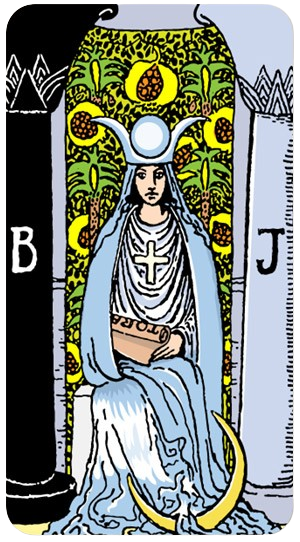

O Louco

Uma pessoa cujo Arcano Pessoal é 0 é representada pela carta "O Louco" no Tarot. O Louco é um símbolo de novos começos, aventura e liberdade. Aqui estão algumas características e desafios de alguém com o Arcano Pessoal 0:
Ele pode ser utilizado para compreender padrões financeiros, melhorar a vida material e emocional, e harmonizar a vida.
O Louco
Uma pessoa cujo Arcano Pessoal é 0 é representada pela carta "O Louco" no Tarot. O Louco é um símbolo de novos começos, aventura e liberdade. Aqui estão algumas características e desafios de alguém com o Arcano Pessoal 0:
Espontaneidade e Aventura: O Louco é conhecido por sua natureza aventureira e disposição para explorar o desconhecido. Essas pessoas geralmente têm um espírito livre e estão abertas a novas experiências, mesmo que isso signifique correr riscos.
Otimismo e Positividade: Elas tendem a ser otimistas e acreditam no melhor das pessoas e das situações. Esse traço pode levá-las a confiar mais em sua intuição do que em uma lógica rígida.
Independência e Liberdade: Valorizam a liberdade e a independência, muitas vezes preferindo traçar seu próprio caminho em vez de seguir as convenções estabelecidas.
Criatividade e Inovação: A mentalidade aberta e a disposição para experimentar novas ideias fazem delas pessoas criativas e inovadoras. Elas não têm medo de pensar fora da caixa.
Despreocupação e Alegria: Podem ser vistas como despreocupadas ou até mesmo inocentes, abraçando a vida com um senso de alegria e maravilha infantil.
Impulsividade: A mesma disposição para correr riscos pode levá-las a ser impulsivas, o que às vezes pode resultar em decisões precipitadas.
Falta de Foco: A constante busca por novas experiências pode dificultar a concentração em um objetivo ou projeto específico.
Naïveté: A confiança nas pessoas e situações pode deixá-las vulneráveis a decepções ou enganos.
Alguém com o Arcano Pessoal 0 pode ser visto como uma força da natureza, sempre movendo-se para frente e explorando novos horizontes. Pense em figuras históricas ou contemporâneas conhecidas por suas explorações ousadas ou por mudar paradigmas, como Cristóvão Colombo em suas viagens ao Novo Mundo ou inovadores modernos que desafiam o status quo.
O Louco nos lembra que, às vezes, o primeiro passo em uma nova jornada é simplesmente confiar no processo e no próprio caminho, mesmo quando ele não é totalmente claro.
O Mago

Uma pessoa cujo Arcano Pessoal é 1 é representada pela carta "O Mago" no Tarot. Esta carta é símbolo de potencial, habilidades e a capacidade de manifestar intenções e desejos. Aqui estão algumas características e desafios de alguém com o Arcano Pessoal 1:
Autoconfiança e Habilidade: O Mago é conhecido por sua autoconfiança e habilidade em manipular recursos à sua disposição. Essas pessoas geralmente têm uma forte crença em suas capacidades e habilidades.
Criatividade e Inovação: São criativas e capazes de trazer novas ideias à vida. Elas têm um talento especial para encontrar soluções inovadoras para problemas.
Iniciativa e Ação: O Mago é o mestre do início. Pessoas com este arcano são proativas e não hesitam em tomar a iniciativa. Elas são impulsionadas pela ação e raramente ficam paradas.
Comunicação Eficaz: Elas são comunicadoras eficazes, capazes de expressar suas ideias de forma clara e persuasiva. Têm a habilidade de convencer os outros de suas visões.
Foco e Concentração: Capazes de focar intensamente em seus objetivos e de canalizar suas energias de maneira produtiva. Elas sabem como manter o controle e a disciplina para alcançar o que desejam.
Arrogância: A autoconfiança pode, às vezes, se transformar em arrogância. Essas pessoas precisam estar atentas para não subestimar os outros ou se tornarem excessivamente autossuficientes.
Manipulação: Com grandes habilidades de comunicação e persuasão, há um risco de usar essas habilidades de maneira manipuladora.
Falta de Paciência: A necessidade constante de ação e progresso pode levar à impaciência. Essas pessoas podem se frustrar facilmente com atrasos ou obstáculos.
Uma pessoa com o Arcano Pessoal 1 pode ser vista como um líder nato, alguém que não apenas inicia projetos, mas também inspira e guia os outros. Pense em figuras históricas ou contemporâneas conhecidas por sua capacidade de transformar visões em realidade, como Steve Jobs, que trouxe inovação para o mundo da tecnologia com a Apple, ou Leonardo da Vinci, cuja criatividade e habilidade técnica deixaram um legado duradouro em diversas áreas.
O Mago nos lembra que temos os recursos e habilidades necessários para criar a nossa própria realidade. Ele nos encoraja a usar nosso potencial de maneira consciente e ética.
A Sacerdotisa/ A Papisa
Uma pessoa cujo Arcano Pessoal é 2 é representada pela carta "A Papisa" (ou "A Sacerdotisa") no Tarot. Esta carta simboliza conhecimento interior, intuição e sabedoria espiritual. Vamos explorar as características e os desafios de alguém com o Arcano Pessoal 2:
Intuição e Sabedoria Interior: A Papisa é conhecida por sua forte conexão com o conhecimento interior. Pessoas com este arcano confiam profundamente em sua intuição e são capazes de perceber verdades ocultas que outros podem não ver.
Pacificação e Serenidade: Essas pessoas geralmente possuem uma presença calmante e serena. Elas são pacificadoras naturais e tendem a buscar harmonia em suas relações e ambientes.
Discrição e Mistério: A Papisa é associada à discrição e ao mistério. Pessoas com este arcano podem ser reservadas, preferindo manter suas emoções e pensamentos mais profundos para si mesmas.
Busca de Conhecimento: Elas têm um desejo intenso de aprender e buscar conhecimento, especialmente em áreas espirituais, filosóficas ou psicológicas. São estudiosas e reflexivas.
Empatia e Compreensão: Têm uma grande capacidade de empatia e compreensão dos outros. Podem oferecer conselhos sábios e apoio emocional de maneira compassiva.
Tendência ao Isolamento: A natureza introspectiva e reservada pode levar ao isolamento. Essas pessoas podem precisar fazer um esforço consciente para se conectar socialmente.
Excesso de Passividade: A busca pela paz e harmonia pode fazer com que evitem confrontos necessários. É importante encontrar um equilíbrio entre serenidade e assertividade.
Secretividade Excessiva: A tendência a guardar segredos e a ser misteriosa pode dificultar a abertura e a transparência nas relações.
Uma pessoa com o Arcano Pessoal 2 pode ser vista como um guia espiritual ou conselheiro sábio. Pense em figuras históricas ou contemporâneas conhecidas por sua profundidade de compreensão e sabedoria, como Carl Jung, cujas teorias psicológicas foram profundamente influenciadas por aspectos espirituais e filosóficos, ou figuras espirituais como Dalai Lama, que oferecem sabedoria e compaixão ao mundo.
A Papisa nos lembra da importância de ouvir nossa voz interior e confiar em nossa intuição. Ela nos ensina a buscar conhecimento e sabedoria, tanto em nós mesmos quanto no mundo ao nosso redor.
A Imperatriz

Uma pessoa cujo Arcano Pessoal é 3 é representada pela carta "A Imperatriz" no Tarot. Esta carta simboliza criatividade, fertilidade, abundância e a energia materna. Vamos explorar as características e os desafios de alguém com o Arcano Pessoal 3:
Criatividade e Expressão: A Imperatriz é profundamente conectada à criatividade. Pessoas com este arcano tendem a ser extremamente criativas, seja nas artes, nos projetos pessoais, ou na resolução de problemas.
Nutriente e Cuidadora: Essas pessoas frequentemente assumem um papel de nutridoras, seja em suas famílias, comunidades ou locais de trabalho. Elas possuem uma energia maternal que as torna excelentes em oferecer suporte e carinho.
Abundância e Prosperidade: A Imperatriz é símbolo de abundância. Quem tem este arcano pode ter uma vida cheia de riqueza em várias formas – seja emocional, espiritual ou material.
Sensualidade e Prazer: Elas têm uma conexão forte com os prazeres sensoriais e físicos da vida. São sensuais e apreciam a beleza e a alegria nos detalhes do cotidiano.
Empatia e Compreensão: São altamente empáticas e compreensivas, o que as torna excelentes em lidar com as emoções e necessidades dos outros.
Superproteção: A inclinação para cuidar dos outros pode, às vezes, resultar em superproteção, tornando difícil para as pessoas ao redor desenvolverem sua independência.
Falta de Limites: A natureza generosa e empática pode levar a dificuldades em estabelecer limites, levando ao esgotamento emocional.
Excesso de Indulgência: Apreciar os prazeres da vida é importante, mas há um risco de se entregar excessivamente a esses prazeres, negligenciando outros aspectos importantes da vida.
Uma pessoa com o Arcano Pessoal 3 pode ser vista como uma figura inspiradora que equilibra a criação e o cuidado. Pense em figuras históricas ou contemporâneas conhecidas por sua habilidade de nutrir e criar, como Frida Kahlo, cuja arte e vida pessoal refletem profunda criatividade e força, ou Michelle Obama, que é admirada por sua empatia, inteligência e dedicação ao bem-estar da comunidade.
A Imperatriz nos lembra da importância de nutrir não apenas os outros, mas também a nós mesmos, e de encontrar beleza e alegria em nossas criações e em nossa vida cotidiana. Ela nos encoraja a abraçar nossa criatividade e a criar um ambiente de abundância e amor ao nosso redor.
O Imperador

Uma pessoa cujo Arcano Pessoal é 4 é representada pela carta "O Imperador" no Tarot. Esta carta simboliza autoridade, estabilidade, disciplina e estrutura. Vamos explorar as características e os desafios de alguém com o Arcano Pessoal 4:
Autoridade e Liderança: O Imperador é uma figura de autoridade e liderança. Pessoas com este arcano tendem a ser líderes naturais, capazes de comandar com firmeza e justiça.
Estabilidade e Segurança: Elas valorizam a estabilidade e trabalham diligentemente para construir uma base segura em suas vidas. Esse valor se reflete em seu trabalho, relacionamentos e vida pessoal.
Disciplina e Organização: Essas pessoas são extremamente disciplinadas e organizadas. Elas seguem regras e procedimentos com rigor, garantindo que tudo esteja em ordem.
Responsabilidade e Confiabilidade: O Imperador é confiável e responsável. Aqueles com este arcano são vistos como pilares de força em suas comunidades e famílias, sempre prontos para assumir responsabilidades.
Praticidade e Realismo: Elas abordam a vida de maneira prática e realista, focando em resultados concretos e tangíveis. Evitam devaneios e preferem manter os pés no chão.
Rigidez e Inflexibilidade: A busca pela ordem e disciplina pode levar à rigidez. Essas pessoas podem encontrar dificuldade em se adaptar a mudanças e novas ideias.
Dominância Excessiva: A natureza autoritária pode, às vezes, se transformar em comportamento dominador, onde elas tendem a impor suas vontades sobre os outros.
Desconexão Emocional: A ênfase na lógica e na praticidade pode levar a uma desconexão emocional, dificultando a expressão de sentimentos e a empatia.
Uma pessoa com o Arcano Pessoal 4 pode ser vista como um líder sólido e confiável. Pense em figuras históricas ou contemporâneas conhecidas por sua habilidade de construir e manter estruturas estáveis, como Nelson Mandela, que liderou com uma força serena e focou na construção de uma nação unida, ou Angela Merkel, cuja liderança estável e prática guiou a Alemanha por muitos anos.
O Imperador nos lembra da importância de construir uma base sólida e segura na vida. Ele nos ensina a valorizar a disciplina, a responsabilidade e a liderança justa.
O Papa / O Hierofante

Uma pessoa cujo Arcano Pessoal é 5 é representada pela carta "O Papa" (ou "O Hierofante") no Tarot. Esta carta simboliza sabedoria espiritual, ensino, autoridade moral e a busca por entendimento. Vamos explorar as características e os desafios de alguém com o Arcano Pessoal 5:
Sabedoria e Conhecimento: O Papa é frequentemente associado à sabedoria e ao conhecimento profundo. Pessoas com este arcano têm uma forte conexão com o aprendizado e a busca por verdades maiores.
Espiritualidade e Tradição: Elas tendem a ter uma forte ligação com a espiritualidade e podem encontrar conforto nas tradições e rituais. São atraídas por questões espirituais e filosóficas.
Ensino e Orientação: Essas pessoas são naturalmente inclinadas a ensinar e orientar os outros. Elas são excelentes mentores e conselheiros, sempre prontos para compartilhar seu conhecimento e ajudar no desenvolvimento dos outros.
Autoridade Moral: O Papa também representa a autoridade moral e ética. Aqueles com este arcano são vistos como figuras de integridade e retidão, frequentemente assumindo papéis de liderança moral em suas comunidades.
Busca por Harmonia: Elas buscam harmonia e ordem, tanto em suas vidas pessoais quanto nas vidas das pessoas ao seu redor. Valorizam a estabilidade e a coesão social.
Dogmatismo: A forte ligação com tradições e crenças pode levar a um comportamento dogmático, onde essas pessoas podem resistir a novas ideias ou mudanças.
Excesso de Rigidez: A busca por ordem e estabilidade pode resultar em uma atitude rígida e inflexível, dificultando a adaptação a novas circunstâncias.
Pressão de Expectativas: Ser visto como uma figura de autoridade moral pode trazer uma pressão constante para viver de acordo com expectativas elevadas, o que pode ser desgastante.
Uma pessoa com o Arcano Pessoal 5 pode ser vista como um mentor sábio e guia espiritual. Pense em figuras históricas ou contemporâneas conhecidas por sua sabedoria e orientação, como Mahatma Gandhi, que liderou com princípios morais e espirituais, ou Martin Luther King Jr., cujos ensinamentos e liderança promoveram grandes mudanças sociais e éticas.
O Papa nos lembra da importância de buscar conhecimento e verdade, e de compartilhar essa sabedoria com os outros. Ele nos encoraja a abraçar nossos papéis como mentores e guias, ajudando a iluminar o caminho para aqueles ao nosso redor.
Os Enamorados / Os Amantes

Uma pessoa cujo Arcano Pessoal é 6 é representada pela carta "Os Amantes" no Tarot. Esta carta simboliza amor, união, escolhas e harmonia. Vamos explorar as características e os desafios de alguém com o Arcano Pessoal 6:
Amor e Relacionamentos: Os Amantes estão profundamente conectados com questões de amor e relacionamentos. Pessoas com este arcano tendem a valorizar muito suas relações afetivas e a buscar conexões profundas e significativas.
Escolhas e Decisões: Este arcano está associado a escolhas importantes e decisões de vida. Pessoas com o Arcano 6 são frequentemente confrontadas com decisões que moldam significativamente suas vidas e precisam seguir o que lhes parece ser certo.
Harmonia e Equilíbrio: Elas buscam harmonia e equilíbrio em suas vidas, não apenas em seus relacionamentos, mas também em suas atividades diárias e ambiente. A paz e a coesão são fundamentais para elas.
Atração e Beleza: Têm um forte apreço pela beleza e pela estética, podendo ser atraídas pelas artes e por expressões criativas que celebrem o amor e a união.
Empatia e Compreensão: São empáticas e compreensivas, com uma habilidade natural para entender e compartilhar os sentimentos dos outros, o que as torna ótimas em nutrir relacionamentos saudáveis e harmoniosos.
Indecisão: A natureza de tomar decisões importantes pode levar à indecisão, especialmente quando há várias opções igualmente atraentes.
Dependência Emocional: A forte ênfase em relacionamentos pode levar a uma dependência emocional excessiva, onde a identidade pessoal se torna entrelaçada com a de seus parceiros ou entes queridos.
Idealismo: A busca por harmonia e beleza pode levar ao idealismo, onde a pessoa pode ter expectativas irrealistas sobre si mesma, os outros ou a vida em geral.
Uma pessoa com o Arcano Pessoal 6 pode ser vista como alguém que valoriza profundamente o amor e a harmonia. Pense em figuras históricas ou contemporâneas conhecidas por suas contribuições para relações interpessoais e beleza, como John Lennon, que pregava o amor e a paz através de sua música e ativismo, ou Frida Kahlo, cujas obras de arte intensamente pessoais e expressivas refletem a profundidade de suas emoções e relacionamentos.
Os Amantes nos lembram da importância de escolher com o coração e de buscar harmonia e equilíbrio em todas as áreas da vida. Eles nos encorajam a valorizar nossos relacionamentos e a tomar decisões que estejam em alinhamento com nossos verdadeiros sentimentos e valores.
O Carro

Uma pessoa cujo Arcano Pessoal é 7 é representada pela carta "O Carro" no Tarot. Esta carta simboliza determinação, controle, movimento e vitória. Vamos explorar as características e os desafios de alguém com o Arcano Pessoal 7:
Determinação e Foco: O Carro é conhecido por sua determinação e foco. Pessoas com este arcano têm uma forte vontade de alcançar seus objetivos e não são facilmente desviadas de seu caminho.
Autocontrole e Disciplina: Elas têm um alto grau de autocontrole e disciplina, o que lhes permite superar obstáculos e desafios com eficiência.
Movimento e Progresso: Estas pessoas estão sempre em movimento, buscando progresso em suas vidas. Elas são dinâmicas e não gostam de ficar paradas ou estagnadas.
Confiança e Coragem: O Carro é um símbolo de confiança e coragem. Elas são corajosas e não hesitam em enfrentar novos desafios com confiança em suas habilidades.
Vitória e Conquista: São frequentemente bem-sucedidas em suas empreitadas devido à combinação de determinação, foco e coragem. A vitória e a conquista são temas recorrentes em suas vidas.
Impulsividade: A natureza dinâmica e o desejo de progresso podem levar à impulsividade. Elas podem tomar decisões rápidas sem considerar todas as consequências.
Teimosia: A forte determinação pode se transformar em teimosia, tornando difícil aceitar opiniões diferentes ou mudar de direção quando necessário.
Exaustão: O constante movimento e busca por conquistas podem levar ao esgotamento físico e mental se elas não tomarem cuidado para equilibrar descanso e esforço.
Uma pessoa com o Arcano Pessoal 7 pode ser vista como um líder arrojado e motivado. Pense em figuras históricas ou contemporâneas conhecidas por sua capacidade de avançar continuamente e superar desafios, como Alexander the Great, que conquistou grande parte do mundo conhecido com sua determinação e estratégia, ou Serena Williams, cuja carreira no tênis é marcada por uma dedicação implacável e inúmeras vitórias.
O Carro nos lembra da importância de manter o controle sobre nossa vida e seguir em direção aos nossos objetivos com confiança e determinação. Ele nos encoraja a não desistir diante dos desafios e a continuar avançando, sempre com os olhos na vitória.